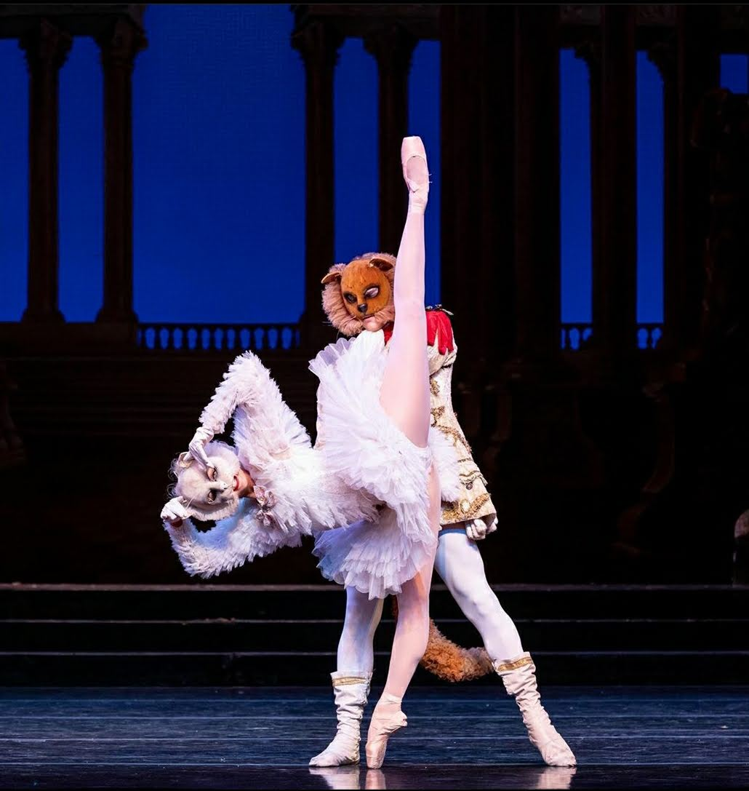
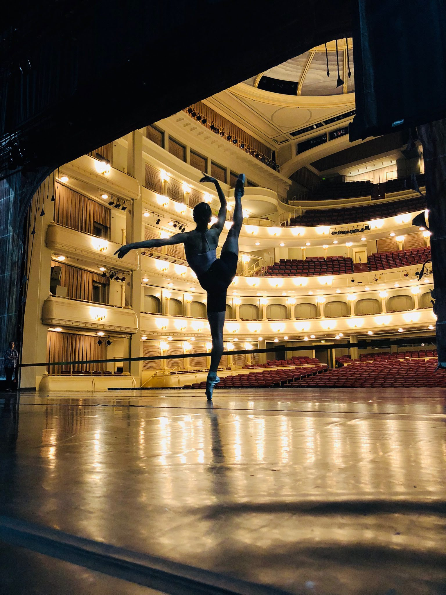

Ruth Langill Repertoire

Featured Roles
- Seven Sonatas -ch. Alexi Ratmanski, third pas de deux
- The Sleeping Beauty -ch. Ben Stevenson, Fairy Beauty, White Cat, Aurora’s friends;
- Cinderella -ch. Ben Stevenson, Winter Fairy, waltz couple
- The Nutcracker - ch. Ben Stevenson, Waltz of the flowers pas de deux, Mirliton pas de trois, Spanish couple;
- Swan Lake -ch. Ben Stevenson, pas de six, big Swans;
- Imbue -ch. Garrett Smith, pas de quatre;
- Bartok -ch. Ben Stevenson, demi soloist pas de duex;
- A Full Life -ch. Avichai Scher, Soloist;
- 11:11 -ch. Andre Silva, soloist;
- Fantasy on a Theme –ch. Ben Stevenson ensemble;
- The Nutcracker -ch. Gabriela Darvesh, Grande pas de duex;
- Le Corsaire -ch. Marius Petipa, Odalisque pas de trois;
- Giselle -ch. Marius Petipa, Jules Perrot, Jean Coralli, title role Giselle
- Swan Lake ch. Marius Petipa, Black Swan pas de duex
- Grofe Variations ch. Bruce L King, pas de duex;

Core de Ballet
- Serenade –ch. George Balanchine;
- Rubies - ch. George Balanchine;
- The Concert -ch. Jerome Robins, Mistake waltz;
- Etudes - ch. Harold Lander, black tutu;
- Dracula - ch. Ben Stevenson Peasant dance, Dead bride;
- Firebird -ch. Ma Cong;
- Beauty and the Beast ch. Lew Christensen, Magic flower, Rose, Nymph;
- Crash - ch. Johnathan Watkins;
- Minus 16 - ch. Ohad Naharin;
- Alice in Wonderland - ch. Ben Stevenson, Roses corps de ballet;
- The Merry Widow – ch. Ronald Hynd, Waltz couple, Black and White couple;
- Cleopatra - ch. Ben Stevenson, roman couple, handmaiden;
- Carmen -ch. Carlos Acosta;
- Pinochio -ch. Will Tuckett, blue fairy ballet, fisher folk;